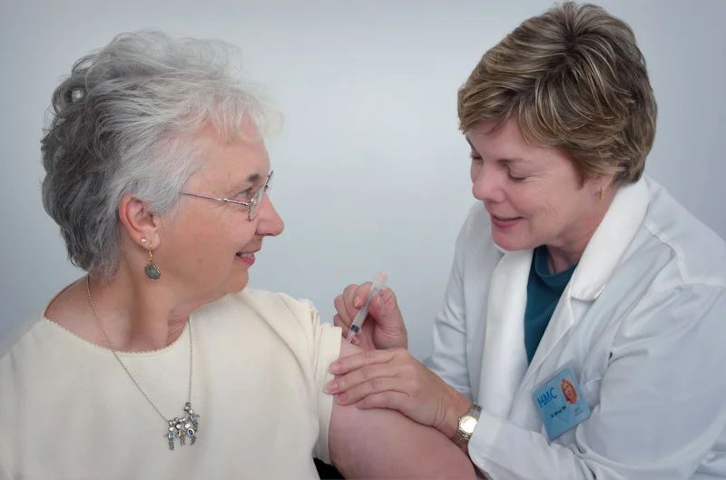

The Benefits of Being a Caregiver at Home
Discover the incredible physical and emotional benefits of providing professional care in a home environment.
READ MOREDiscover the incredible physical and emotional benefits of providing professional care in a home environment.
READ MOREUnderstanding Alzheimer's is the first step toward better care. Here are crucial facts families should know.
READ MORE
Our experiences shape how we provide support to those who need it most in their golden years.
READ MORESimple modifications and habits can drastically reduce the risk of falls for elderly individuals at home.
READ MOREEnsuring that our caregivers are up to date with the latest healthcare standards is our top priority.
READ MOREApproaching the topic of home healthcare can be difficult. Here are tips for a smooth conversation.
READ MORE
Mental health is just as important as physical health when caring for seniors at home.
READ MOREProper nutrition plays a critical role in recovery and maintaining strength.
READ MOREExplore how modern technology is making home healthcare safer and more reliable.
READ MOREPhysical therapy from the comfort of home can significantly speed up the healing process.
READ MORECaregiving is demanding. Here are effective strategies to protect your own well-being.
READ MORENo one should provide care alone. Learn how to build a reliable local support network.
READ MOREEffective strategies for managing chronic illnesses comfortably at home.
READ MOREHow to prepare your loved one for the transition to receiving professional care at home.
READ MOREA comprehensive checklist to ensure your home is fully safe for elderly residents.
READ MORE
Why empathy is the most crucial skill any professional caregiver can possess.
READ MOREStay updated with the latest health tips, senior care advice, and STACKLY news directly in your inbox.